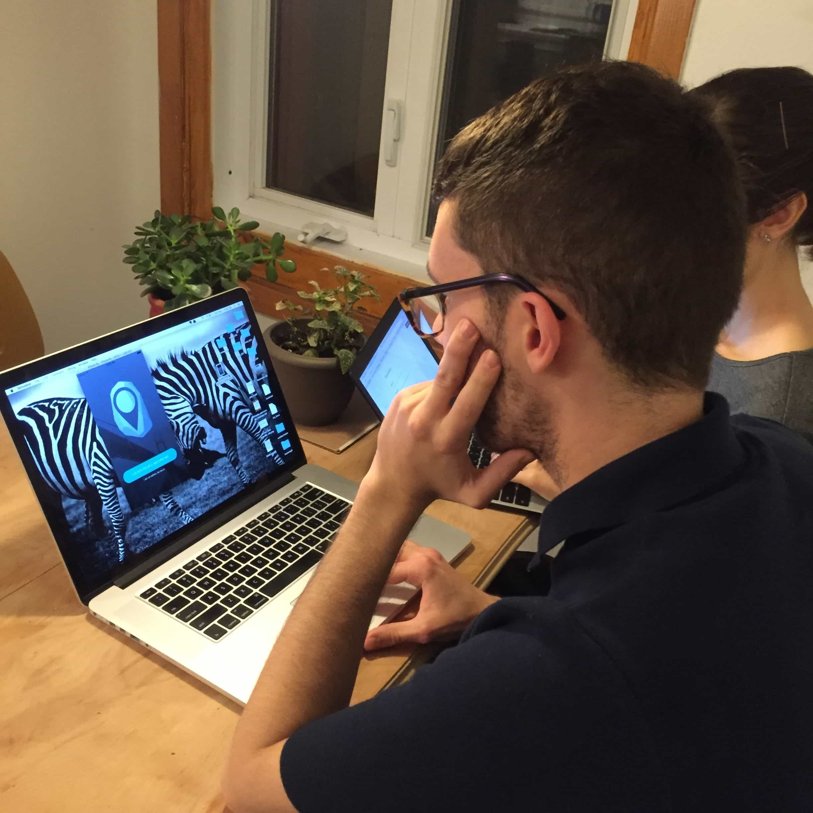
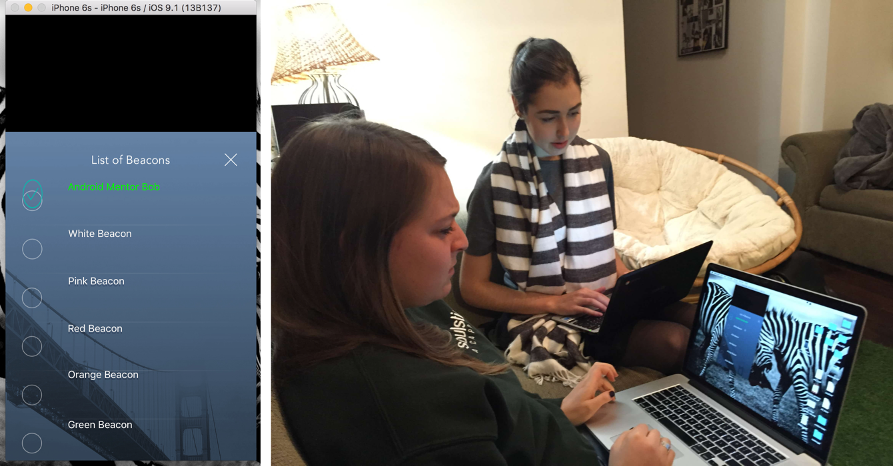
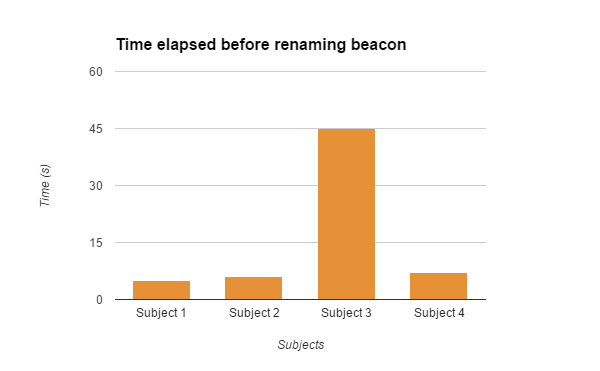
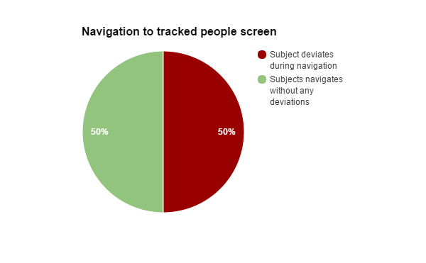
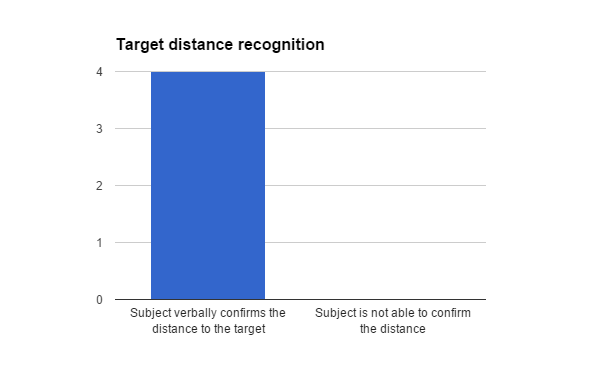
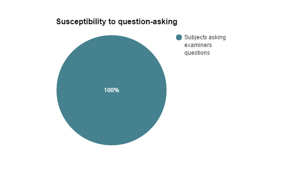
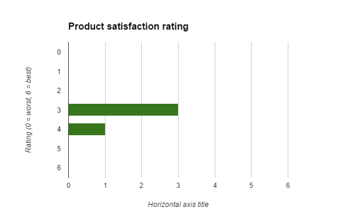

Testing
For the formative feedback portion of this project, we were assigned the Wireless Close-Proximity (WCP) group's FindAround project to test. At this stage, their prototype consisted of an Xcode application running an iOS simulator. For all tests, we presented users with an iPhone 6s simulated screen using a 15" MacBook Pro.
Because test materials did not specify how many test subjects to use, we opted to test with 4 users – this is the same number of users that WCP group used in their low-fidelity testing. As specified in the test procedure documentation, we chose subjects who seemed to fit either the conference/hackathon participant persona or the festival-goer persona. Our observations, combined with the users' answers to pre- and post-test questionnaires, tell us that 2 test subjects belonged to each of the categories.
The test procedure is summarized below, and the results are available here.
- Read a brief introductory text to the test subject.
- Have them complete the pretest questionnaire.
- Prompt the user to complete task 1 by reading them a short paragraph.
- Observe the user while completing test task 1.
- Prompt the user to complete task 2 by reading them a short paragraph.
- Observe the user while completing test task 2.
- Have them complete the post-test questionnaire.
- Thank the user for their cooperation.
Because the WCP group misunderstood that evaluators (the "experts") complete heuristic evaluations, not test subjects, we completed their questionnaire in addition to a normal heuristic evaluation to fulfill all components of their usability test.
Observations
A summary of important observations, user comments, and failure conditions for WCP's usability goals are outlined below.
| Observation | Test Subject Comments | Failure conditions of usability goals |
|---|---|---|
| Users became irritated when trying to select person or beacon. |
"How do I select blue beacon?" – subject 1
"Oh, that's annoying!" – subject 4 |
#2 - users deviated from optimal path to reach the desired action
#4 - users asked evaluators questions |
| Users became confused by lack of feedback. |
"Now what?" – subject 1
"Is that it?" – subject 2 "Why didn't it save?" - subject 3 |
#4 - users asked evaluators questions |
| Users did not understand beacon-person equivalence. |
"Wait - I'm locating Bob?" – subject 2
"Hmm.. it's not bad, but I don't really get it" – subject 3 |
#1 - users did not understand that renaming a beacon meant that they would be able to locate the person
#4 - users asked evaluators questions |
| Users became upset when the system did not react as expected. | "What the.. what do I do? What happened? I don't know what I did!" – subject 2 (encountered error*) |
#4 - users asked evaluators questions
#5 - When test subject 2 encountered a system error, she became visibly troubled because she thought she had broken the application |
| Users easily began locating a person of interest. |
"Bob is 5 meters away!" – subject 3
"He's 0 meters away?! ... Oh! No, he's 5 meter away, haha." – subject 4 |
none
(#3 - successful) |
The completed heuristic evaluation is available here.
Analysis
Quantitative summaries
Task 1: "The user will attempt to rename a beacon after pairing it as the next step and not think that the test is complete. If the user is lost and waits idly for more than 10 seconds after pairing, the association has not been made."
The success threshold for this measure was 10 seconds. It is clear from this data that most subjects renamed the beacons within the time limit. Test subject 3 had particular difficulty in noticing footer text and understanding that they required access to the admin interface.
Task 2: "The user should arrive at the screen that displays people you are tracking without deviating from the path to get there."
Half of the subjects deviated during navigation to the Locate POI screen. There was no threshold associated with this measure. Deviation was usually caused by test subjects attempting the wrong series of 'clicks' or struggling with the selection list.
Task 3: "The user verbally confirms the distance to the selected person of interest."
It is clear that subjects had no issue with confirming the distance to their tracked target. The users seemed to find this display of information clear.
Task 4: "The user performs all activities without asking the examiner any questions."
As the above graph so clearly illustrates, all test subjects ended up asking questions to the examiners.
Task 5: "A satisfaction rating of at least 4/6 is desirable at this point."
The average product satisfaction rating for the test subjects was 3 of 6. The defined usability goal states that 4 of 6 or higher is desirable, and this goal has therefore not been reached.
Comparison across users
Similarities- All users asked the observer questions during the testing.
- All users had no issue with confirming the distance to their tracked target.
- All users thought the circle on the left of the beacon name was clickable.
- All users gave a product satisfaction rating between 3-4 out of 6.
- In the pre-test questionnaire, 3 of the 4 test subjects answered that they would ask someone for help in looking for a person of interest and 3 of the 4 test subjects had no experience with apps that allow you to find people of interest.
- 3/4 test subjects successfully renamed the beacon within 10 seconds.
- 3/4 subjects had a reaction or comment regarding the lack of confirmation after successfully renaming the beacon.
- 2/4 test subjects noted the “0 meters away” text on the tracking page and didn’t understand it.
- 2/4 test subjects mentioned that they found the admin text too small on the homescreen.
- 2/4 had never been to conference, job fair, convention, or hackathon and fit the “festival go-er” persona. While within the other two who had been, one was familiar with hackathons and the other with job fairs.
- All users had different responses in how they would hypothetically try to find a person of interest if they could not call them.
- Each test subject had at least one different suggestion for improving the system.
- When asking test subjects what they least liked about the system, they all mentioned different aspects.
The similarities and differences outlined above present some very valuable information. First, it is worthwhile to note that 2/4 test subjects had never been to a job-fair, convention, or hackathon and all the test subjects asked questions. The users fitting the festival-goer persona however, asked more questions relating to system functionality and confusion, whereas the hackathon-participant types asked more questions about the information that was (or was not) available to them.
Secondly, the users performed better overall on the 2nd test task, supporting the claim that they were using recall instead of recognition. Most users struggled with the selection-list, where the circle was not 'clickable', and those familiar with technology became more frustrated that the festival-goer types. The festival-goer types also seemed to experience greater distress when they struggled with the tasks, even though they had been reassured that the system was being evaluated. Because all users stated in the questionnaires that they would locate a person of interest differently, and because they all mentioned different appealing aspects of the system, we cannot be certain that the current implementation would fit a wide scope of users. For the hackathon-participant persona however, the system could certainly satisfy their requirements.
Usability issues
*This list is prioritized.
1. Disconnect between beacon metaphor and real-world methods of finding POIs.Many users did not understand what beacons were or how they would help them to locate another person. They thus had difficulty grasping why beacons had to be paired or renamed. The limitations of beacon technology also become very important when compared with real-world methods of finding other people. The proximity of a beacon is usually a visible distance away, but it does not indicate direction.
“I liked the Person of Interest page, I found that the clearest. It was clear that I was looking for someone specific, unlike the admin page where I was kind of confused at first what beacons were.”
“Additionally, I was unclear about the "beacons" and what that meant.”
2. System status (and access to system state) is unclear.Many users could not differentiate admin-mode vs. locating-mode. Failure to identify the correct functionality for their particular need creates a great deal of frustration for the user.
“On the first page, it was very unclear that you could either find a person OR login as a mentor. Because the font was small and grey under the green button, I did not notice it very well. ”
3. Lack of feedback messages and indicators.Users did not understand when they were performing tasks correctly or incorrectly. They did not understand what options were available to them at any given interface. Particular examples include: renaming the beacon and pairing a beacon.
“I also didn't really get how the check-uncheck-rename beacon thing works, and still wasn't sure if I did it properly once I got it right.”
“Why didn't it save?" (after successfully renaming beacon)
4. Lack of flexibility and efficiency when performing common tasks.Every user tried to click the circle to select a beacon or a person. This is such a common means of selection with touchscreen GUIs that it should be implemented immediately. The text is the only portion of the button that is clickable. Although these are minor changes, they present serious barriers to use when their aggregate effect is considered.
“Make the circles clickable. That was extremely annoying.”
“When I went to click on the beacon, I clicked the circle but that did not work. Then, I clicked the name and that worked. Perhaps it would be better to have both the circle and name be 'clickable.'”
Test plan critique
User manual
We find the user manual to be quite confusing, and not sufficiently detailed - remember that the manual was supposed to assume no prior knowledge of its readers. It is likely to cause some confusion for examiners when testing the system.
-
No high-level perspective
The manual introduction does not give any high-level perspective as to how the system is meant to function. This makes it difficult for examiners to know if they are testing what they are supposed to test, and to know what kind of responses they should look for in the test subjects while testing. For instance, it is not clear anywhere in the manual that some users are supposed to be carrying beacons - this is essential information for people seeking to understand the application functionality!
Suggestion: Describe your system functionality at a high level, detailing the different components and use cases.
-
No explanation of beacons or bluetooth technology
Nowhere in the text is the concept of beacons explained. This is clearly in violation with the goal that readers shouldn't have any prior knowledge. Additionally, the reader should also probably be given instructions as to how to configure and use bluetooth on their devices. Not everyone knows what "pairing" is, for instance. This relates to Nielsen’s heuristic “Match between system and the real world” because Bluetooth and Beacon are terms that are too system-oriented.
Suggestion: Describe beacons; what they are, how they work, what you need to use them, how to get them, etc. Give a simple bluetooth introduction and explanation.
-
Elimination of trial and error claim
Your manual text states that "the application aims to eliminate trial and error", but at the same time, your prototype navigation relies on "hot/cold"-type navigation, as it only displays the distance to the user target, and not any direction. Isn't this also trial and error?
Suggestion: Remove this claim from your user manual.
-
"Only one beacon can be paired at a time"
This wording is very ambiguous. Do you mean that at any one time, only one beacon can be paired with your device, or do you simply mean that you have to add them sequentially? This relates to Nielsen’s heuristic “Consistency and standards” because the system’s platform convention is ambiguous.
Suggestion: Make this wording clearer.
-
"You must rename a beacon before pairing it"
This wording could also be clearer. Furthermore, the renaming instructions should probably be shown earlier in the manual, before the part about pairing, as it makes more sense to organise the manual tasks sequentially. This relates to Nielsen’s heuristic “Match between system and the real world” as information is not given in a natural and logical order.
Suggestion: Change this to "You cannot rename a beacon while it's paired." Move this entire section to earlier in the manual.
-
Figure 2 and figure 3 are too similar
The only thing that changes between your figure 2 and figure 3 is the text on the big green button. This makes it confusing when you go from one image to another, because you don't know what you're looking for in the second image. Furthermore, the wording "figure 3 will appear" doesn't communicate that well.
Suggestion: Show only the part of the image that has changed in figure 3, or include an indicator on the image, so the user knows that to look for. Change the wording to "The button text will change to "Locate people" or something similar.
-
"You should now begin walking towards your target(s)"
How does the user know which direction their targets are in? They only know the distance between them and the targets. You're making it sound like the system has more functionality than what it really has.
Suggestion: Change this to a proper description of what the user is meant to be doing, e.g. "walk around, testing different directions to see which ones will lead you closer to your target(s)".
Usability goals
-
The first usability goal target measurement does not make sense
"The user will attempt to rename a beacon after pairing it as the next step and not think that the test is complete. If the user is lost and waits idly for more than 10 seconds after pairing, the association has not been made."
Suggestion: Change this to "The user understands within 10 seconds after pairing a beacon that they will also have to give the beacon a recognizable name, if other users are going to be able to track them efficiently.
-
Vague quantitative target measurements
Most of your "quantitative" measurements are simply binary conditions - this does not provide much useful information if you for instance only test with one user. Suggestions for quantitative measurements:
- For usability goal 2: "The user is able to start tracking a person within 20 seconds of starting the application."
- For usability goal 3: "The user should be able to locate (visually identify) a person 20 meters away from them within 1 minute of starting the tracking."
- For usability goal 4: "The user makes less than 5 mistakes (mis-clicks/mis-taps) during the process of pairing and naming a beacon".
- For usability goal 5: n/a.
Test procedure
-
No mention as to whether beacons are necessary for testing
The text does not specify whether you require beacons or not in order to carry out the tests. This is crucial information for testers.
Suggestion: Mention together with your other equipment requirements that beacons are not needed for this test.
-
No test of general user understanding of system
We felt a noticeable confusion from the test subjects in that they were not sure what the system does or how the system worked. There should be a test task to test their general understanding.
Suggestion for additional test task: Task 1: Describe the functionality of the system. Show the subject the prototype system, and let them look at it freely for 20 seconds. Then, ask them what functionality of the system they recognize. (e.g. “What are all the things this system can do?”)
-
Test Tasks are biased to single user group
In the “User Population” description, you ask us to test two groups: “festival (large event) goer” and “conference/hackathon participant”. The Test Tasks were specifically describing a Hackathon scenario. This alienated the “festival (large event) goer” test subjects, because it did not relate to them and they were not familiar with the context of the scenarios.
Suggestion: The Test Tasks should have a variety of scenarios that could fit your user personas.
Reporting
-
The questionnaires do not consider different user personas
The “User Population” description, you ask us to test two groups: “festival (large event) goer” and “conference/hackathon participant”. The questionnaires assume the test subject is a “conference/hackathon participant”. For example: “When you go to a conference, job fair, convention, hackathon, how often are you trying to locate a person of interest?” or “If you were to get face to face with the Android mentor, what would you do?”. This caused confusion for the test subjects we chose who we identified as “festival (large event) goer.”
Suggestion: Ask which persona they fit into in the pre-test questionnaires. Make the questions less specific to Hackathons.
-
Reporting documents don’t encourage much details.
We felt that, in general, the documents could have probed more into specific features or prompted more useful user feedback. We also found that there were questions where relevancy was not clear (question 2 in post-test questionnaire) and redundant questions (question 2 and 4 in pre-test questionnaire).
Suggestion: For example, the post-questionnaire could have asked if the difference between admin and user mode was clear or if they would use an app like this in the future (why or why not).
Usability Evaluation
-
Misunderstood concept of heuristic evaluation
Referring to class readings, the methodology and reporting document provided does not follow Heuristic Evaluation standards. For example, the methodology described includes a task description and refers to the evaluator as a test subject. This goes against a heuristic evaluation as the process described in readings requires an evaluator freely exploring the system on their own.
The reporting document provided for the Heuristic Evaluation include a modified heuristics with a rating system. From readings, the deliverable for this type of evaluation is a list of usability issues referencing the specific heuristic(s) that the evaluator believe are being violated which can be given in any form the evaluator prefers.
Suggestion: Follow methodology described in “How to Conduct a Heuristic Evaluation”by Jakob Nielson
Design critique
1. Make the purpose of the application immediately recognizable to all types of users.
Addresses issues #1 and #2This can be accomplished by using more specific language on buttons and home screen, title text on certain pages, pop-up messages on first use, or a small info button to help users that truly do not understand how the system works. Even some individuals who are very familiar with modern technology may not be aware of iBeacons, or what the system is trying to accomplish.
In real use-cases, festival goers and hackathon or conference attendees will not receive a priming passage read to them before using the system. They will be notified of a system that will help them find others. The ‘gaps’ in understanding from this point to actual use should not be so large as to inhibit the users’ overall experience.
2. Make the mode of the application, and the use-cases for each mode, more obvious to the user.
Addresses issue #2 and #3This implies that the word “admin” should be abandoned as it does not correctly address the user group to which event organizers identify. The screen probably required 2 buttons, and the “admin” button could require a password. In some events, the organizers might wish to let attendees add themselves to the system, in which case the ‘admin’ title is particularly inappropriate.
The interfaces should be slightly different between these two modes. A user, either by differences in page layout or other visual indicators, should recognize which mode they are using, and what they can accomplish in that particular mode.
Some of the button text further creates confusion and should be changed. When pairing beacons, they serve as instructions instead of communicating functionality. This should be separated into instructive title text.
3. Use the power of the computer to indicate errors, disabled states, and success actions.
Addresses issue #2Error states, disabled states, and success actions can all be better displayed by using colour and/or transparency. This would limit user error, particularly for users who have never used the system, or, the festival goer persona in particular. This user group might be under the influence of alcohol, drugs, in dark spaces, or large crowds.
The power of the computer should also be used to organize the data as the number of beacons or POI increases.
4. Optimize for common use-cases by improving selection actions and better utilizing screen space.
Addresses issue #4This can for instance bone by making both text and selection-boxes clickable, removing the X button from some views, and adding menus/options to better utilize screen space.